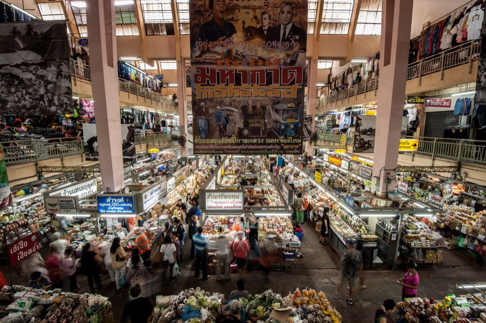
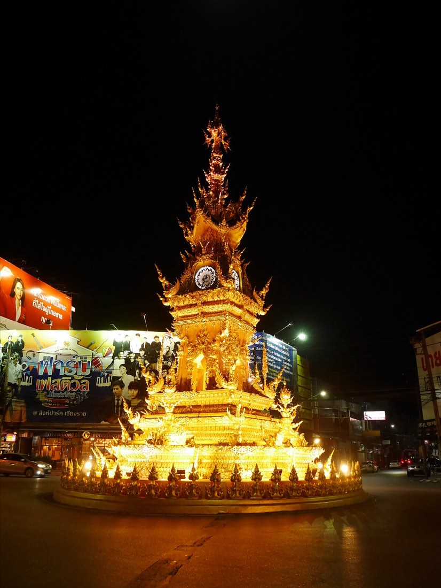
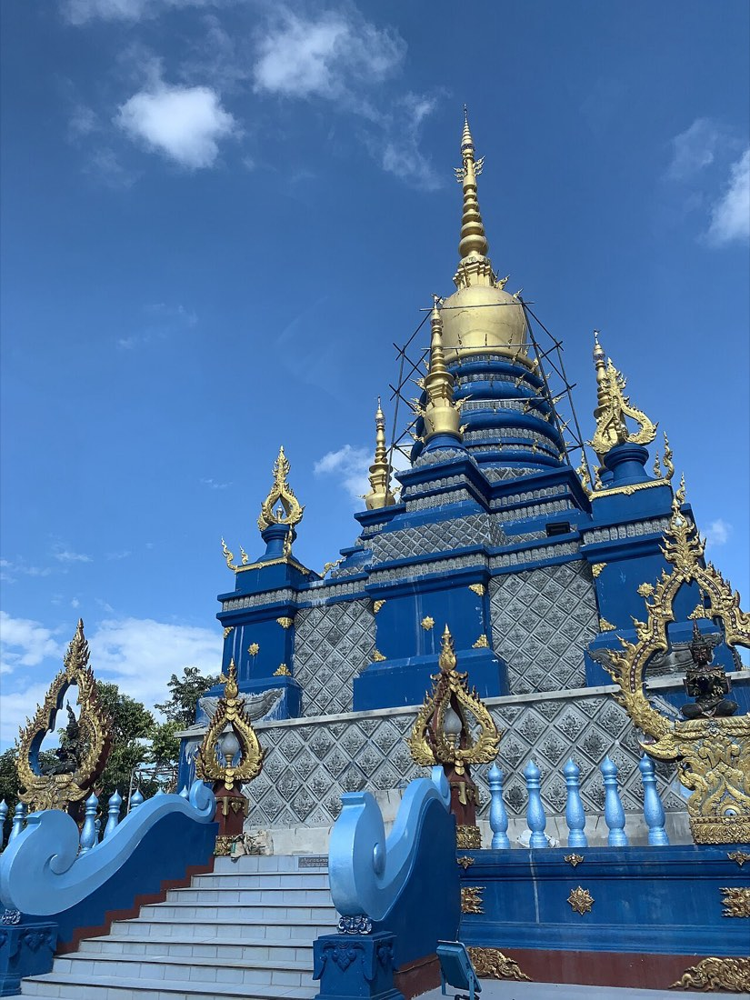
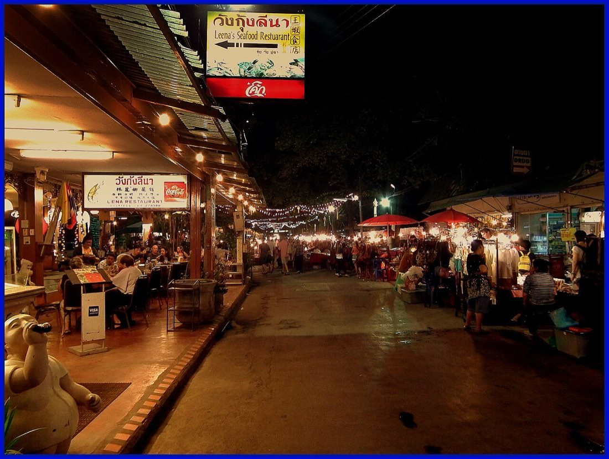

อยากกินอะไร อยากไปไหน · What do you feel like, and where are you going
มดแดงรู้ทุกซอย · the red ants know every lane
สารบัญเมืองเชียงใหม่และเชียงราย — วัด ร้าน หมอ ตลาด และของดีทุกซอย เรียงเป็นหมวดให้เปิดหาได้เหมือนสมุดหน้าเมือง · A city directory for Chiang Mai and Chiang Rai — wats, shops, doctors, markets, and the good things down every soi, sorted the old way.
สารบัญของคนแถวนี้ ไม่จัดอันดับ ไม่หักค่าหัวคิว · The city’s own directory — no rankings, no commission เพิ่งมาครั้งแรก เริ่มตรงนี้ · New here? Start here



ของดีอยู่ในซอย · the good stuff is down the lane📷 ASITRAC, Department of Tourism T…, กสิณธร ราชโอรส · เครดิตภาพทั้งหมด · all picture creditsวางแผนบ่ายนี้ · Plan your afternoon
ใหม่ · NEW
เลือกร้านก๋วยเตี๋ยว คลินิก ร้านทำเล็บ — จุดไหนก็ได้จากทั่วสารบัญนี้ — แล้วดูพร้อมกันในแผนที่เดียว พร้อมระยะทางจริงตามถนนแต่ละช่วง · Pick a noodle stand, a clinic, a nail place — any stops from anywhere in the directory — and see them together on one map, with the real street distance for every leg.
- เดินกับขี่มอเตอร์ไซค์ คิดแยกกัน เพราะมันไม่เหมือนกันจริงๆ — สะพานคนเดินมอเตอร์ไซค์ขึ้นไม่ได้ และถนนเดินรถทางเดียวทำให้ต้องอ้อม · Walking and riding are worked out separately, because they really are different journeys — a footbridge is no use to a scooter, and a one-way street means going round
- คิดตามถนนจริง ไม่ใช่ลากเส้นตรงข้ามตึกข้ามคูเมือง · Routed along real streets — not a straight line drawn through buildings and across the moat
- แชร์ทริปทั้งหมดเป็นลิงก์เดียว ส่งไลน์ให้ใครก็ได้ ไม่ต้องสมัคร ไม่เก็บข้อมูล · Share the whole run as one link over LINE — no account, nothing tracked
- ดาวน์โหลดเก็บไว้เป็นข้อความ พร้อมเบอร์โทรและเวลาเปิดของทุกจุด · Download it as plain text, with every stop's phone number and opening hours
| บินตรง · as the crow flies | 419 m | |
| 🚶 | เดินจริง · on foot | 560 m |
| 🛵 | ขี่มอเตอร์ไซค์ · on a scooter | 817 m |
ครอบคลุมในเวียงและรอบนอกราว ๒ กิโลเมตร · นอกเขตนี้บอกตรงๆ ว่ายังไม่ได้คิดตามถนน · Covers the old city and about 2 km around it — outside that, it says so plainly instead of guessing.
เมืองทั้งเมือง · The whole city
เปิดแผนที่ · Open the map →แตะเพื่อเปิดแผนที่เมือง เลือกชั้นที่อยากดู แล้วส่งมุมที่เห็นให้เพื่อนได้ · Open the city map, switch on the shelves you want, and send the view to a friend.
ประตู ๙ บาน · Nine doors into the city
กระดานที่มดเดินเก็บเองทีละเรื่อง อ่านจากป้ายจริง ประกาศจริง · boards the ants keep by hand — one subject at a time, from real signs
- ดอย-แผ่นดินThe doiภูเขาทั้งลูก วาดจากความสูงจริง · the mountains, drawn from real elevation
- คูเมือง-ประตูเมืองThe moatประตูกับแจ่งทั้ง ๙ จุด รอบเวียงเก่า · the nine gates and corners of the old city
- น้ำพุร้อนHot springs98 บ่อ · springsทั่วภาคเหนือ พร้อมอุณหภูมิจากกรมทรัพยากรธรณี · the whole north, temperatures from the DMR
- ช้างElephants15 ที่บอกเอง · venues, in their own wordsอ่านจากประกาศของแต่ละที่ ไม่แต่งเติม · read from each venue's own notices, never invented
- มวยไทยMuay Thai4 เวทีคืนชก · fight-night venuesคืนไหนชก กี่โมง ราคาจากป้าย · which nights, what time, prices from the door
- เรียนทำอาหารCooking classes12 โรงเรียน · schoolsเมนู วัน และราคา จากโรงเรียนโดยตรง · menus, days and prices straight from the schools
- ศาลเจ้า-หลักเมืองShrines21 ศาล · shrinesศาลเจ้าจีน หลักเมือง และเจ้าที่ ทีละหลัง · Chinese shrines, city pillars, spirits of the place
- ไหว้พระ ๙ วัดNine temples10 สาย · roundsเส้นบุญ ๙ วัด พร้อมพระประจำวันเกิด · nine-wat merit rounds, with the birthday Buddhas
- ถนนและซอยRoads & sois987 สาย · streetsร้านเรียงตามถนนจริง ไม่ใช่ตามตัวอักษร · places in street order, not alphabetical
กระดานอื่น · more boards · น้ำตก · Waterfalls (61) · จุดชมวิว · Viewpoints (178) · ยอดดอย · Peaks (168) · เทศกาลทั้งปี · The festival year (38) · รถเมล์-เดินทาง · Buses & routes (674) · เซเว่นทั้งเมือง · The sevens · ตัดผม-ทำผม · Hair & barbers · ของฝากกับของต้องห้าม · Souvenirs & the law (12) · แผนที่รสชาติ · The taste map · เดินถึงไหน · Walk-sheds · ตอนนี้เปิดอะไร · Open now
เชียงใหม่ · Chiang Mai
14,493 ที่ · places- วัด-สิ่งศักดิ์สิทธิ์Wats & Sacred Places1,500
- ร้านอาหาร-ของกินFood & Eats4,151
- นวด-สปาMassage & Spa300
- หมอ-คลินิก-โรงพยาบาลDoctors & Hospitals1,526
- กัญชา-กระท่อมCannabis & Kratom557
- ของจำเป็นประจำเมืองCity Essentials1,994
- โรงแรม-ที่พักHotels & Stays1,466
- โรงเรียน-สถานศึกษาSchools & Education1,493
- โรงเรียนนานาชาติInternational Schools38
- ตลาดMarkets88
- ช้อปปิ้ง-ของฝากShopping & Gifts174
- อสังหาฯ-คอนโดReal Estate & Condos707
- รถ-เดินทางGetting Around273
- ช่าง-ซ่อมRepairs & Trades97
- เสริมสวย-ทำผมBeauty & Hair205
- สักยันต์-รอยสักTattoo & Sak Yant29
- สัตว์เลี้ยงPets55
- กีฬา-ฟิตเนสSport & Fitness105
- มวยไทยMuay Thai26
- เรียนทำอาหารไทยThai Cooking Classes23
- ช้างElephants28
- แม่บ้าน-ช่างสวน-ดูแลบ้านHome Services7
- ชมรม-สมาคมClubs & Community33
- ธุรกิจ-ค้าขายDoing Business46
- หนัง-คอนเสิร์ต-อีเวนต์Movies, Concerts & Events9
- พิพิธภัณฑ์-หอศิลป์Museums & Galleries45
- สวน-ที่พักผ่อนParks & Green Space116
- ที่เที่ยว-ของดีSights & Good Things399
เชียงราย · Chiang Rai
6,209 ที่ · places- วัด-สิ่งศักดิ์สิทธิ์Wats & Sacred Places1,186
- ร้านอาหาร-ของกินFood & Eats1,163
- หมอ-คลินิก-โรงพยาบาลDoctors & Hospitals516
- กัญชา-กระท่อมCannabis & Kratom137
- ของจำเป็นประจำเมืองCity Essentials700
- โรงแรม-ที่พักHotels & Stays470
- โรงเรียน-สถานศึกษาSchools & Education955
- โรงเรียนนานาชาติInternational Schools3
- ตลาดMarkets51
- ช้อปปิ้ง-ของฝากShopping & Gifts99
- อสังหาฯ-คอนโดReal Estate & Condos72
- รถ-เดินทางGetting Around268
- ช่าง-ซ่อมRepairs & Trades83
- เสริมสวย-ทำผมBeauty & Hair78
- สักยันต์-รอยสักTattoo & Sak Yant4
- สัตว์เลี้ยงPets13
- กีฬา-ฟิตเนสSport & Fitness16
- มวยไทยMuay Thai14
- เรียนทำอาหารไทยThai Cooking Classes2
- ช้างElephants2
- แม่บ้าน-ช่างสวน-ดูแลบ้านHome Services3
- ชมรม-สมาคมClubs & Community55
- ธุรกิจ-ค้าขายDoing Business10
- หนัง-คอนเสิร์ต-อีเวนต์Movies, Concerts & Events4
- พิพิธภัณฑ์-หอศิลป์Museums & Galleries28
- สวน-ที่พักผ่อนParks & Green Space126
- ที่เที่ยว-ของดีSights & Good Things414
ของดีวันนี้ · Today’s picks
ดูทั้งหมด · See all → เดอะการ์เด้น ร้านอาหารและเกสต์เฮาส์ · The Garden Restaurant & Guest Houseร้านอาหาร-ของกินFood & Eats
เดอะการ์เด้น ร้านอาหารและเกสต์เฮาส์ · The Garden Restaurant & Guest Houseร้านอาหาร-ของกินFood & Eats หอนาฬิกาเฉลิมพระเกียรติฯ เชียงราย · Chiang Rai Clock Towerที่เที่ยว-ของดีSights & Good Things
หอนาฬิกาเฉลิมพระเกียรติฯ เชียงราย · Chiang Rai Clock Towerที่เที่ยว-ของดีSights & Good Things- ไลลากรุ๊ป เชียงราย ทัวร์ · Laila Group Chiangrai Tourที่เที่ยว-ของดีSights & Good Things
- Laila's Designer Consignmentช้อปปิ้ง-ของฝากShopping & Gifts
- River Tavernร้านอาหาร-ของกินFood & Eats
 วัดเชียงยืน · Wat Chiang Yuenวัด-สิ่งศักดิ์สิทธิ์Wats & Sacred Places
วัดเชียงยืน · Wat Chiang Yuenวัด-สิ่งศักดิ์สิทธิ์Wats & Sacred Places วัดป่าเป้า · Wat Pa Paoวัด-สิ่งศักดิ์สิทธิ์Wats & Sacred Places
วัดป่าเป้า · Wat Pa Paoวัด-สิ่งศักดิ์สิทธิ์Wats & Sacred Places วัดเชียงโฉม · Wat Chiang Chomวัด-สิ่งศักดิ์สิทธิ์Wats & Sacred Places
วัดเชียงโฉม · Wat Chiang Chomวัด-สิ่งศักดิ์สิทธิ์Wats & Sacred Places Chedi Liam Templeวัด-สิ่งศักดิ์สิทธิ์Wats & Sacred Places
Chedi Liam Templeวัด-สิ่งศักดิ์สิทธิ์Wats & Sacred Places
วันนี้สายไหน · What are you in the mood for
- ร้านอาหาร-ของกินFood & Eats (4,151)

วัด-สิ่งศักดิ์สิทธิ์Wats & Sacred Places (1,500) ตลาดMarkets (88)
ตลาดMarkets (88) ที่เที่ยว-ของดีSights & Good Things (399)
ที่เที่ยว-ของดีSights & Good Things (399) สวน-ที่พักผ่อนParks & Green Space (116)
สวน-ที่พักผ่อนParks & Green Space (116) หนัง-คอนเสิร์ต-อีเวนต์Movies, Concerts & Events (9)
หนัง-คอนเสิร์ต-อีเวนต์Movies, Concerts & Events (9) พิพิธภัณฑ์-หอศิลป์Museums & Galleries (45)
พิพิธภัณฑ์-หอศิลป์Museums & Galleries (45) สักยันต์-รอยสักTattoo & Sak Yant (29)
สักยันต์-รอยสักTattoo & Sak Yant (29) รถ-เดินทางGetting Around (273)
รถ-เดินทางGetting Around (273)
ดูแลตัวเอง · Look after yourself
อ่านจากประกาศของสถานพยาบาลเอง พร้อมวันที่กำกับ — ไม่ใช่คำแนะนำทางการแพทย์ · read from providers' own notices, dated — never medical advice
ร้านของคุณอยู่ในนี้แล้ว — มายืนยันเลยเจ้า · Your shop is already listed — come and claim it
ฟรี ไม่ต้องสมัครสมาชิก ไม่ต้องมีอีเมล แก้เบอร์โทร ไลน์ เวลาเปิด ได้เอง ขึ้นทันที · Free, no account, no email. Fix your phone number, your LINE and your opening hours yourself — it shows straight away.
ไปต่อไหม? · shall we keep going?
 ตลาดกลางคืน-กาดแลงNight marketsของกินริมทาง ของฝาก ราคาคนท้องถิ่น · street food, gifts, and local prices88 แห่ง · places
ตลาดกลางคืน-กาดแลงNight marketsของกินริมทาง ของฝาก ราคาคนท้องถิ่น · street food, gifts, and local prices88 แห่ง · places
หนัง-คอนเสิร์ต-อีเวนต์Films, gigs & eventsรอบหนังคืนนี้ คอนเสิร์ต และงานในเมือง · tonight's showtimes, gigs and what is on9 แห่ง · places ร้านนั่งดึก-บาร์Late tables & barsร้านที่ยังเปิด เมื่อครัวบ้านปิดแล้ว · still open when the kitchen at home is not4,151 แห่ง · places
ร้านนั่งดึก-บาร์Late tables & barsร้านที่ยังเปิด เมื่อครัวบ้านปิดแล้ว · still open when the kitchen at home is not4,151 แห่ง · places
🎪 งานในเมือง · What is on ดูทั้งหมด · see all →
🎪 งานในเมือง · What is on ทั้งหมด · all →
🚻 ห้องน้ำใกล้ฉัน · Toilets near you
- ปั๊มน้ำมัน · Fuel stationฟรี · free
- โรงพยาบาล · Hospitalฟรี · free
- ห้างสรรพสินค้า · Shopping mallฟรี · free
- วัด · Templeฟรี · free
- สนามบิน · Airportฟรี · free
 ข้างขึ้นข้างแรม · The moon complication
ข้างขึ้นข้างแรม · The moon complication ดวงจันทร์ของพฤหัสบดี · Jupiter's four moons
ดวงจันทร์ของพฤหัสบดี · Jupiter's four moons มองจากจุดแดงใหญ่ · From inside the Great Red Spot
มองจากจุดแดงใหญ่ · From inside the Great Red Spot🎋 เซียมซี · Fortune sticks
🙏 มหาลาภ · Maha Lap
ยทา ทฺวเยสุ ธมฺเมสุ,
ปารคู โหติ พฺราหฺมโณ;
อถสฺส สพฺเพ สํโยคา,
อตฺถํ คจฺฉนฺติ ชานโต.
Yadā dvayesu dhammesu,
pāragū hoti brāhmaṇo;
Athassa sabbe saṁyogā,
atthaṁ gacchanti jānato.
When a brahmin has gone beyond
dualistic phenomena,
then they consciously
make an end of all fetters.
19I am a stranger on the earth.
Don’t hide your commandments from me.
20My soul is consumed with longing for your ordinances at all times.
🎱 ลูกแก้วทำนาย · The oracle ball
คิดคำถามใช่/ไม่ใช่ในใจ แล้วเขย่า · Hold a yes/no question in mind, then shake
🔮 ดวงวันนี้ · The reading today
ดี · good บริวาร · Boriwan — คนรอบตัว ครอบครัว มิตรสหาย · your people — family, team, friends
วันของคนรอบตัว งานที่ทำด้วยกันไปได้ดี ชวนกันทำ อย่าทำคนเดียว · A day for your people — shared work goes well; do it together rather than alone.
วันนี้วันอาทิตย์ อยู่ตำแหน่งบริวารของคนเกิดวันอาทิตย์ · Today, Sunday, stands at Boriwan on the wheel of a Sunday child
สีของคุณ สีแดง · your colour: redเลี่ยงสีฟ้า (สีกาลกิณี) · ease off light blue (the กาลกิณี colour)กำลังวัน 6 · day strength 6
ระวัง · take care วันนี้沖 ชงกับปีมะเมีย · today is clash for the Horse year
วันชงของปีคุณ งดตัดสินใจเรื่องใหญ่ เลื่อนได้ก็เลื่อน ใจเย็นเข้าไว้ · The day clashes with your year — hold the big decision if you can, and keep your temper.
เสาวันนี้ 丙子 (วันชวด) · day pillar 丙子 — a Rat day
กลาง · middling ปีทับ (ชงร่วม) — ปีนักษัตรเดียวกับปีเกิด ตำราจัดเป็นชงร่วม ปีแห่งการทบทวนตัวเอง · own-branch year — The year shares your branch — counted a companion clash; a year for taking stock.
ดี · good ราศีกันย์ · Virgo ♍
ดวงจันทร์ไม่ทำมุมวันนี้ ใจนิ่งดี เหมาะงานต้องสมาธิ · no Moon aspect today — a settled mind, good for quiet work
ดาวอังคารโยคเกณฑ์ — แรงลุยและความกล้า เปิดโอกาสเล็กๆ ที่ต้องยื่นมือไปรับ · Mars opens a small door — it needs you to reach for it — the theme is drive and daring
ดวงจันทร์อยู่ราศีเมษ · the Moon is in Aries
🌤 อากาศ · Weather
เลือกเมืองที่อยากดู · Choose the cities you want
🌬 ฝุ่น PM2.5 · The air
เลือกเมืองที่อยากดู · Choose the towns you want
☯ ก่วยประจำวัน · Hexagram of the day
益 Yì
Increase
Decrease above to enrich below; a favorable time for great deeds.
🪙 เสี่ยงทายเอง · Cast your own →วิธีเหมยฮวาอี้ซู่ ตั้งก่วยจากวันเวลา · Plum Blossom time method — the date builds the hexagram🕐 เทียบเวลา · Time conversion
เลือกเมืองที่อยากเทียบ · Choose the clocks you want
🎬 รอบหนังวันนี้ · Showtimes today
- เดอะ ด็อก สตารส์118′10:3012:3013:1015:5016:3018:3019:3021:30
- หมัดเทวา ท้าเดิมพัน127′11:0013:4016:2019:0021:40
- แฮร์รี่ พอตเตอร์กับศิลาอาถรรพ์152′11:3013:5014:5018:1021:30
- ซาวด์ ยูโฟเนียม เดอะ ฟินาเล่ ปฐมบท120′11:3019:00
- พี่น้องปริศนาโรงเรียนมหาเวท ภาค สืบตระกูลโยตสึบะ102′14:00
- อีก 8 เรื่องที่โรงนี้ · 8 more films at this cinema
- เดอะ ด็อก สตารส์118′12:0019:00
- มหากาพย์โอดิสซี173′15:3021:40
- หมัดเทวา ท้าเดิมพัน127′11:0013:4016:2019:0021:40
- แฮร์รี่ พอตเตอร์กับศิลาอาถรรพ์152′10:3016:40
- สไปเดอร์-แมน แบรนด์ นิว เดย์145′13:50
- วิญญาณตามติด หลุดจากนรก106′20:00
- คำสารภาพของหมอผี126′11:0013:4016:2019:0021:40
- รินรดา113′10:3015:30
- วิญญาณตามติด หลุดจากนรก106′13:0518:00
- หมัดเทวา ท้าเดิมพัน127′11:0013:4016:2019:0020:30
- แฮร์รี่ พอตเตอร์กับศิลาอาถรรพ์152′11:0016:40
- ธูป เที่ยงคืน วิญญาณ102′14:2020:00
- อีก 2 เรื่องที่โรงนี้ · 2 more films at this cinema
- หมัดเทวา ท้าเดิมพัน127′10:3013:1015:5018:3021:10
- คำสารภาพของหมอผี126′10:3013:1015:5018:3020:0021:10
- รินรดา113′11:30
- สไปเดอร์-แมน แบรนด์ นิว เดย์145′14:0020:00
- ธูป เที่ยงคืน วิญญาณ102′17:30
- อีก 2 เรื่องที่โรงนี้ · 2 more films at this cinema
🎟 ผลสลากกินแบ่ง · Lottery results
งวดวันอาทิตย์ที่ 16 สิงหาคม 2569 · Draw of Sunday 16 August 2026⚙ ปรับแต่งหน้าแรก · Personalize
ข่าววิ่ง · News ticker
ข่าวมดแดง · Word from the ants
มีงานบุญ งานประเพณี หรืออะไรใหม่ในเมือง เราจะบอก · นานๆ ที ไม่กวน · When a festival, a merit-making day or something new in town is worth knowing. Now and then, never often.
เก็บไว้ที่เราเท่านั้น · ยกเลิกได้ทันทีทุกฉบับ · Kept by us and nobody else. Every letter has a one-click unsubscribe.